What kind of game?
You are the manager and owner of "North Star FC", a small club in Division 3. One turn is one week. Train your players, win matches, earn money and grow the club.
Your goal: climb from Division 3 to 2 and 1, win the domestic cup and the Asian tournament, and finally win the Club World Cup. Becoming world champions clears the game (you can keep playing afterwards).

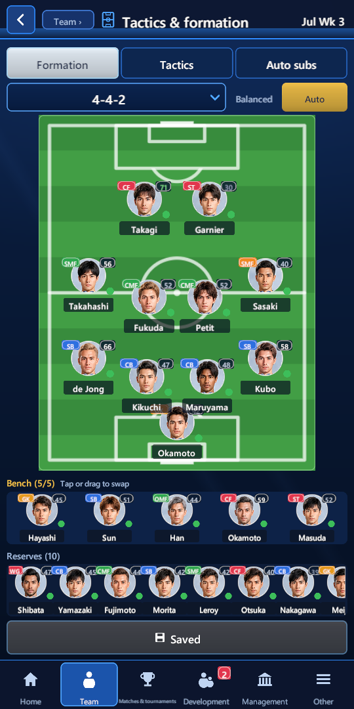
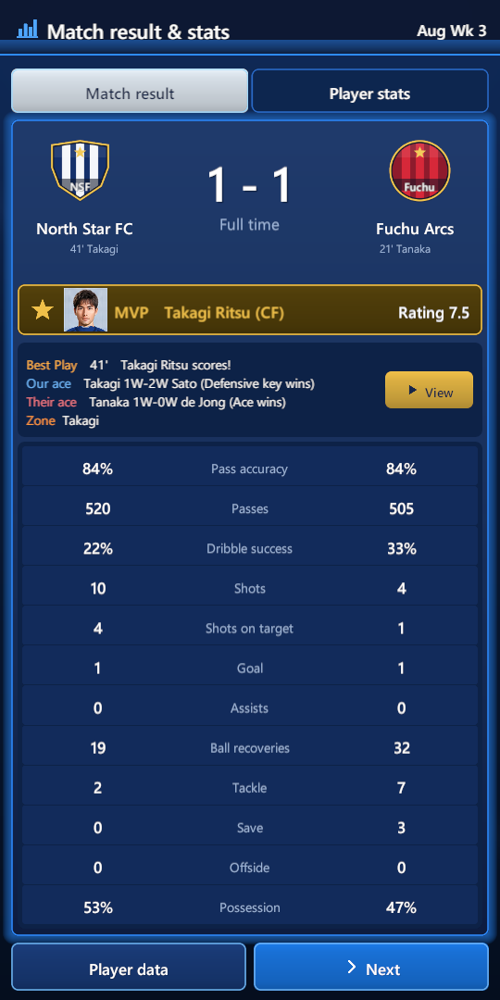
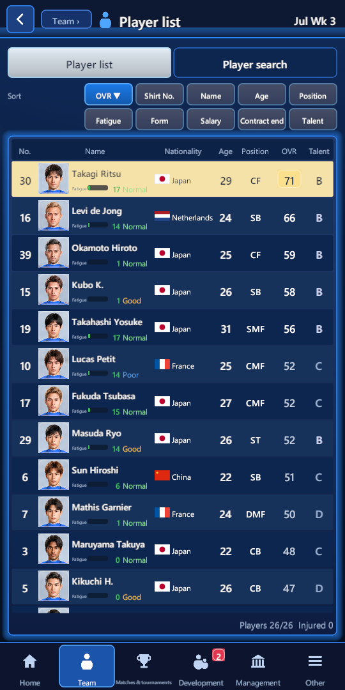
The game can be played in Japanese, English and Traditional Chinese (Settings → Language).
Watch the videos
New features (tricks, Ace Duel, the Zone, Best Play, achievements, talent awakening)
The videos show the Japanese version.
3D matches

Matches are played in 3D with 22 players. One-twos, overlaps, switches of play, long shots, goalkeeper saves… Your players' attributes and the tactics you choose change how the match unfolds.
- Give tactics, formation and substitution instructions at half-time
- 2×, 4× speed and skip to watch only what you want
- Player names above their heads (your team in blue, opponents in red)
- A real 0–90 minute clock, with added time
- You can also see only the result, or switch to 2D highlights
- On phones you can play matches in portrait or landscape (choose in Settings)

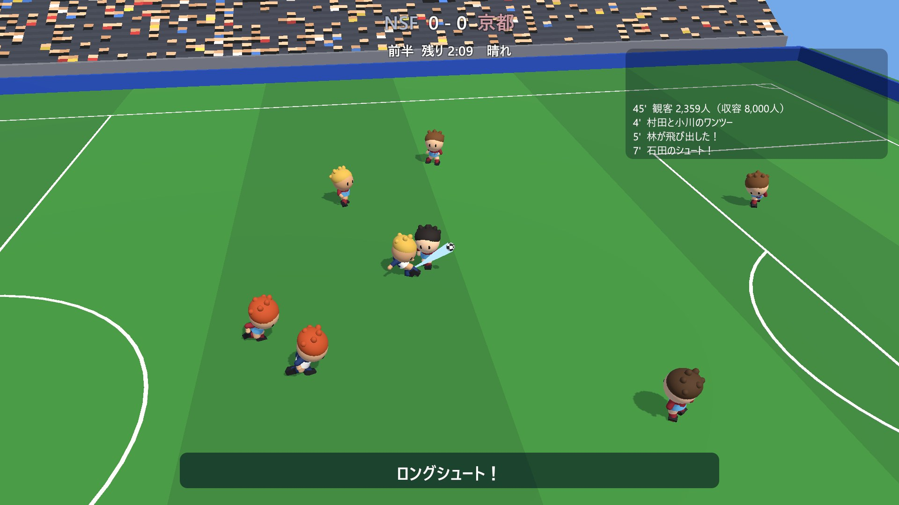


Portrait matches
Play 3D matches while holding your phone upright. The camera sits near the centre of the main stand and turns to follow the ball, showing the goalmouth from an angle. The half-time screen is also laid out for portrait, with the pitch on top and the bench below.
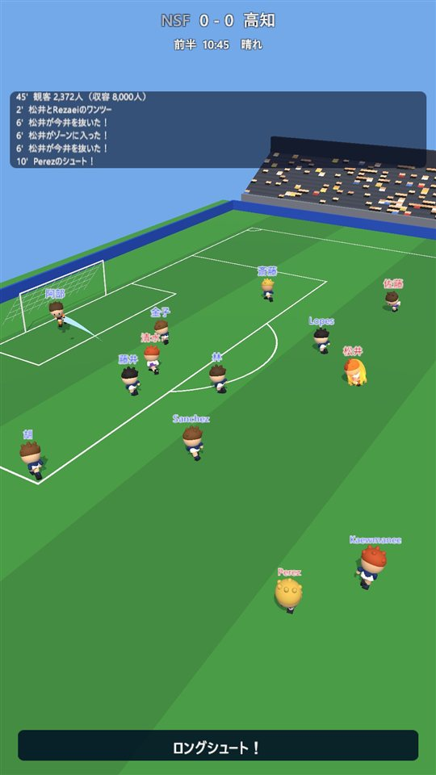

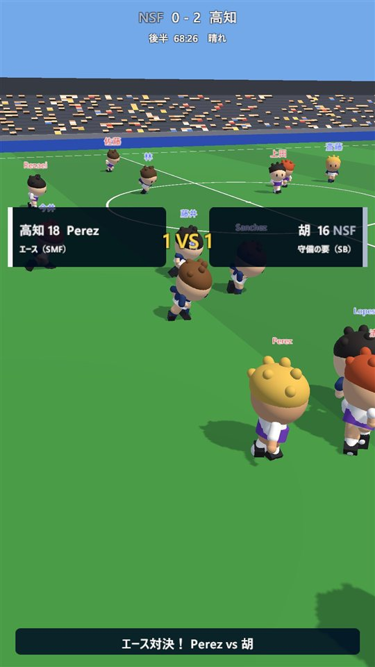

Portrait or landscape
On phones you can choose the orientation for the non-match screens and for 3D matches separately in Settings. By default the menus are portrait and matches are landscape. On PC, a wide window gives the landscape layout and a tall window the portrait layout.

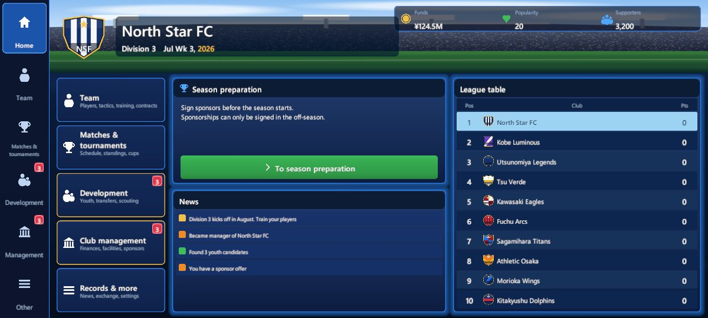
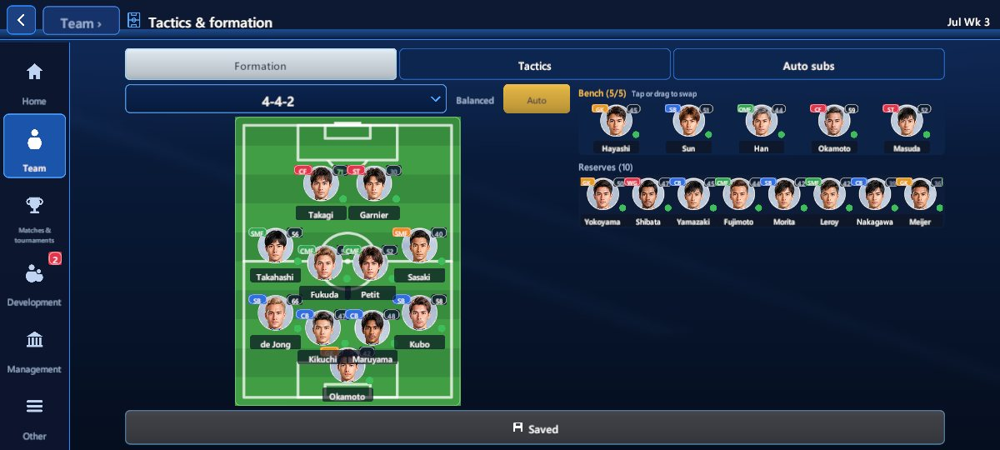
Features
Tactics & formation
6 formations and 5 tactics. Drag to swap starters and bench players. You can also set conditions to substitute tired players automatically.
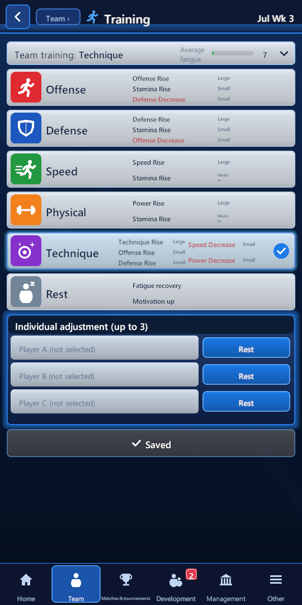
Grow your players in training
Each week's training gives EXP and raises attributes. Fatigue lowers form, so rest players when needed. Very rarely, a player's talent awakens.
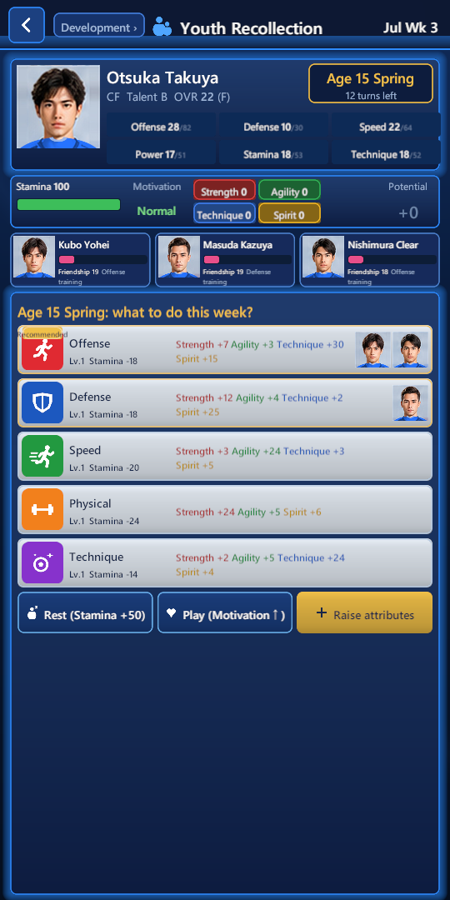
Youth & Youth Recollection
When a youth candidate joins, the "Youth Recollection" mini game looks back on their development from 15 to 18, letting you raise attributes and skills.
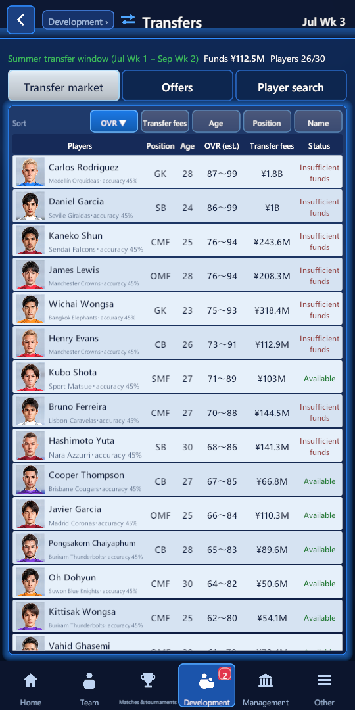
Transfers & scouting
Transfers happen only in the summer and winter windows. Scouts find promising players at other clubs; better scouts reveal more of a player's true attributes and skills.
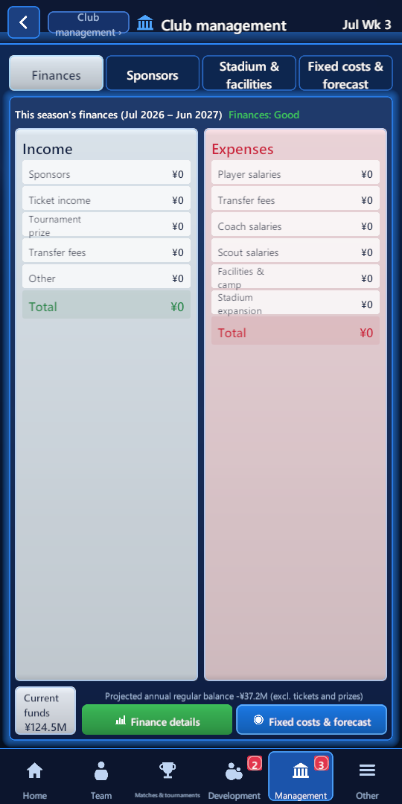
Club management
Earn income from sponsors, tickets and prize money, and pay player and staff salaries. Upgrading facilities improves development and income. Run out of money and you can't sign anyone.
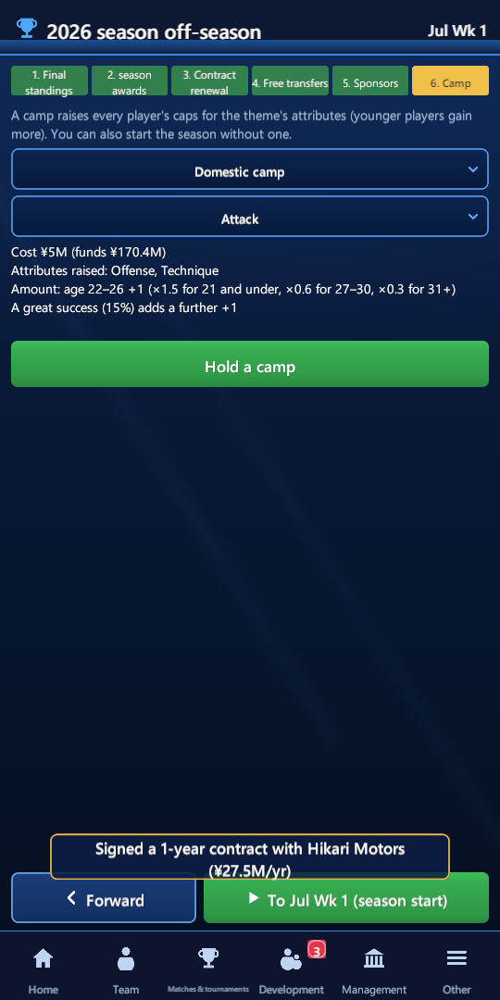
July training camp
Before the season, pick a camp location (domestic, Asia or Europe) and a theme (attack, defense or physical) to raise your players' attribute caps.

Tricks
Scissors, Marseille roulette, Cruyff turn and heel lift. Technical players have signature tricks that work better in matches, and technique training can teach new ones.
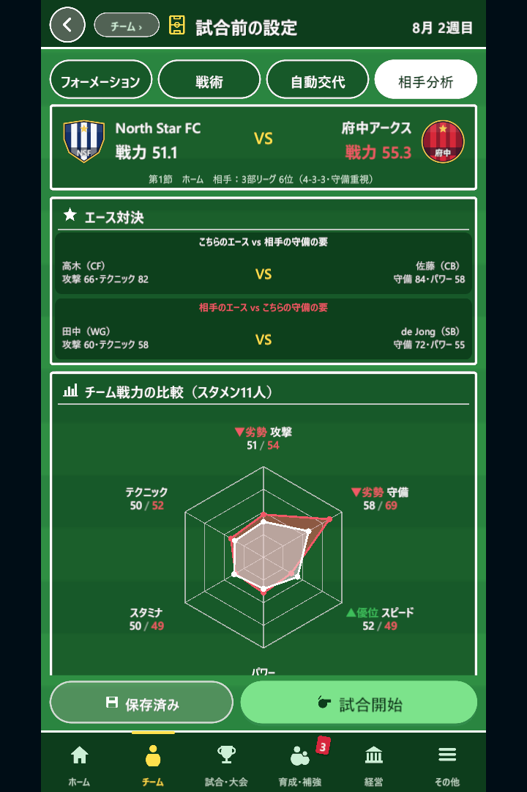
Ace Duel
Before a match, see the duel between your ace and the opponent's defensive key. When they meet in the match it's an "Ace Duel!" — the camera closes in on the 1-on-1. The winner is recorded in the match result.

The Zone & Best Play
Players on a run of success enter "the Zone" and get stronger for a while. After the match, relive the best moment as "Best play of the week".

Change names & photos
You can change the names and face photos of your own club's players, picking photos from your phone or PC. Photos stay on your device; only names are included in team data exchange.
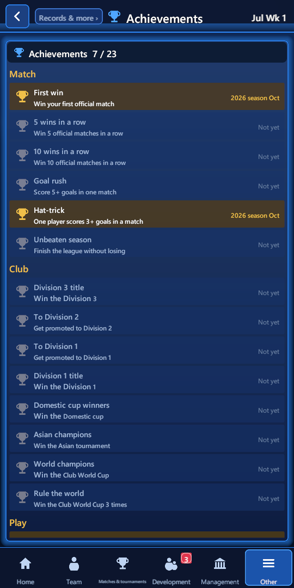
Achievements
First win, 10 wins in a row, hat-tricks, a heel lift goal, world champions… Collect 23 achievements and write your club's history.
The road to the top
- Start in Division 3. Each league has 18 clubs. The top 3 are promoted and the bottom 3 relegated.
- Finish high in Division 1. Top clubs in Division 1 and the domestic cup winner qualify for the Asian tournament (July–August).
- Win the Asian tournament. Get through the group stage, then the quarter-finals, semi-finals and final.
- Win the Club World Cup (December) to become world champions! A battle against 16 top clubs from around the world.
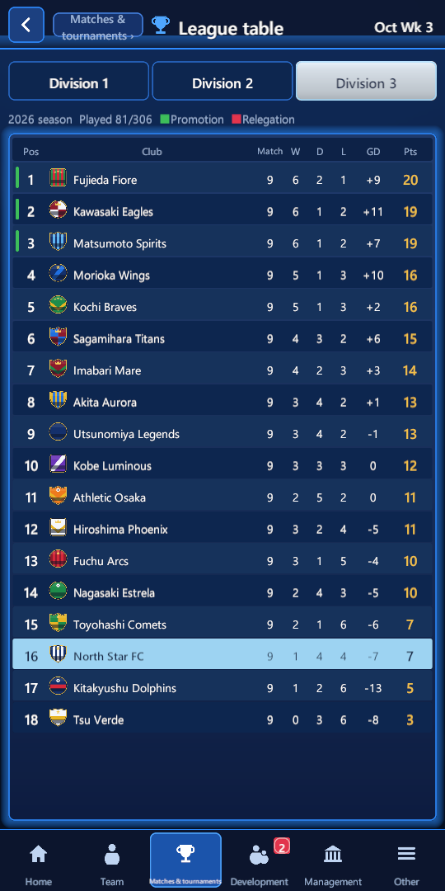
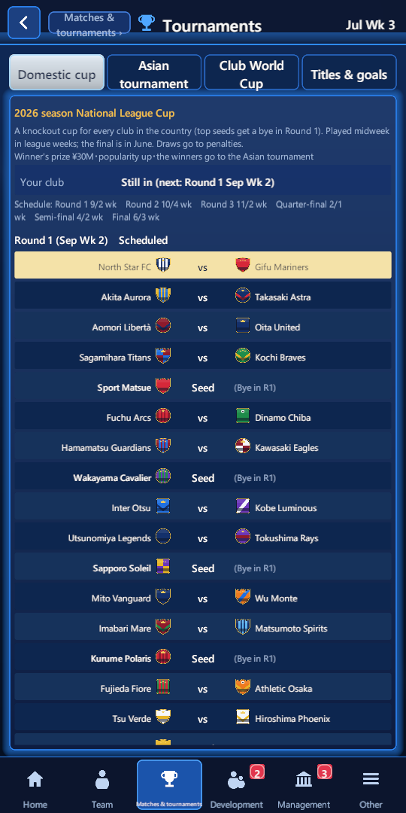
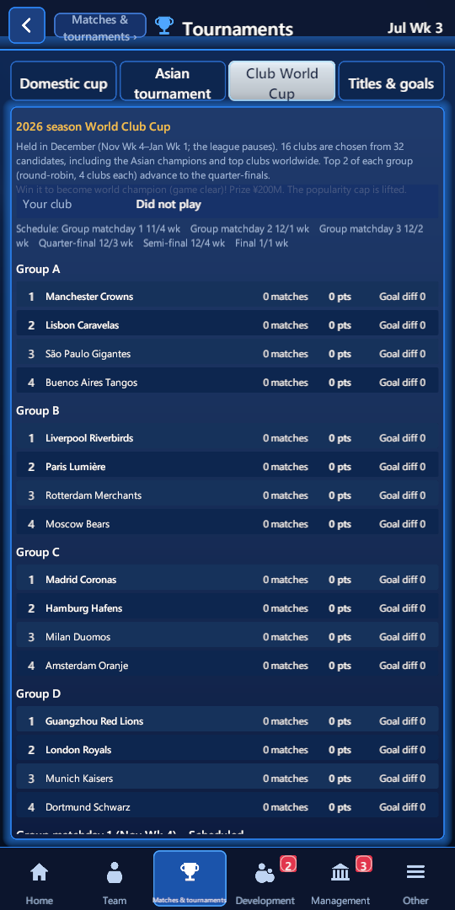
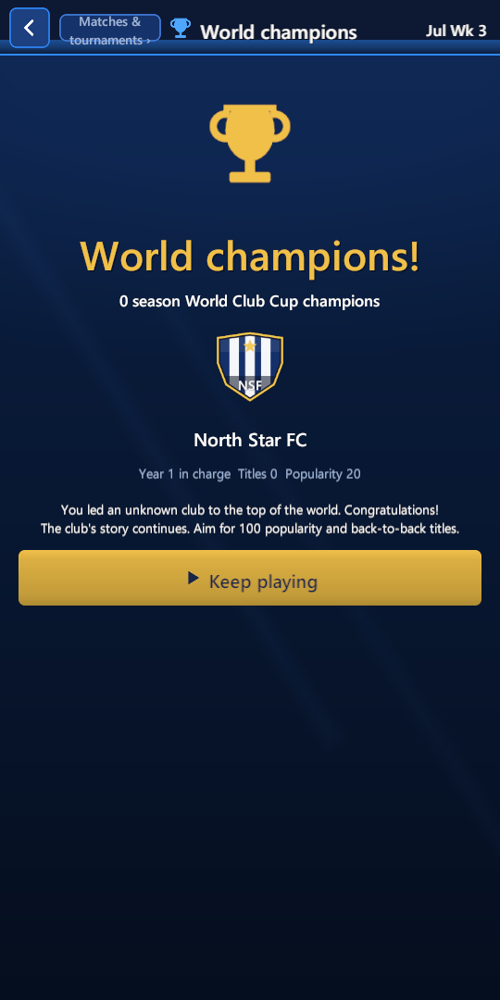
Building a strong club takes everything: developing players, managing money and winning tactics.
Besides tournaments, "Team data exchange" lets you export your team and play friendlies against your friends' teams.
How to play & guide
See "How to play" for the screens and how a week works, and the "Guide" for the systems and numbers behind training, tactics, skills, facilities and more.